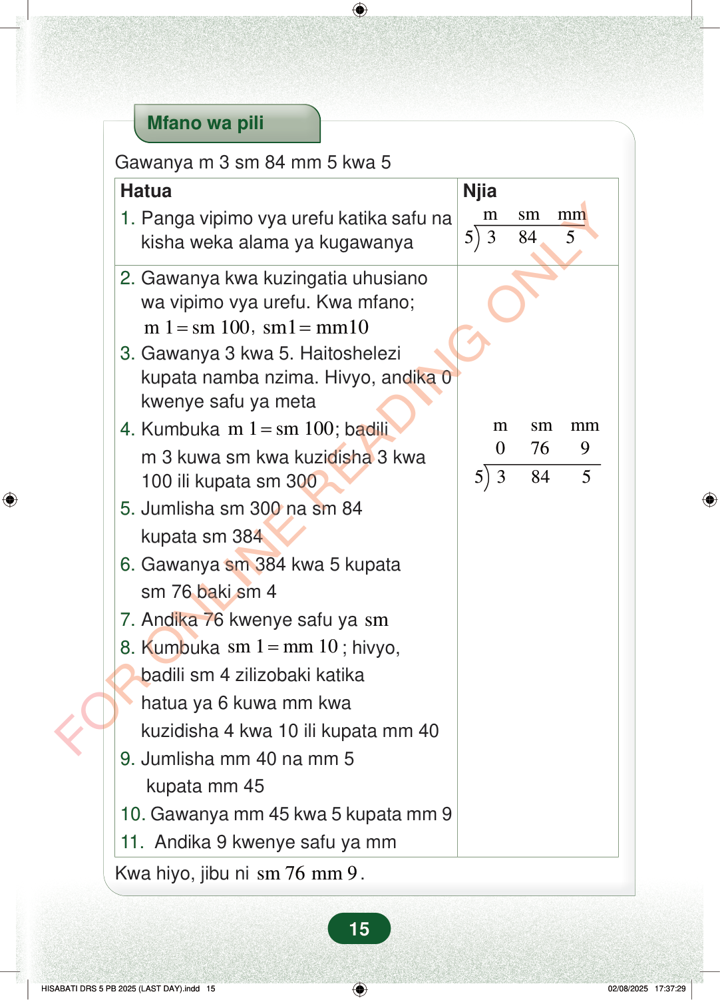

Mfano wa piliGawanya m 3 sm 84 mm 5 kwa 5Njiamsmmm53845Hatua1.Panga vipimo vya urefu katika safu nakisha weka alama ya kugawanya2.Gawanya kwa kuzingatia uhusianowa vipimo vya urefu. Kwa mfano;msmmm076953845m 1sm 100=,sm1mm10=3.Gawanya 3 kwa 5. Haitoshelezikupata namba nzima. Hivyo, andika 0kwenye safu ya meta4.Kumbukam 1sm 100=; badilim 3 kuwa sm kwa kuzidisha 3 kwa100 ili kupata sm 3005.Jumlisha sm 300 na sm 84kupata sm 3846.Gawanya sm 384 kwa 5 kupatasm 76 baki sm 47.Andika 76 kwenye safu yasm8.Kumbukasm 1mm 10=; hivyo,badili sm 4 zilizobaki katikahatua ya 6 kuwa mm kwakuzidisha 4 kwa 10 ili kupata mm 409.Jumlisha mm 40 na mm 5kupata mm 4510.Gawanya mm 45 kwa 5 kupata mm 911.Andika 9 kwenye safu ya mmKwa hiyo, jibu nism 76mm 9.15
Mfano wa pili
Gawanya m 3 sm 84 mm 5 kwa 5
Njia
m sm mm 5 3 84 5
Hatua 1. Panga vipimo vya urefu katika safu na kisha weka alama ya kugawanya
2. Gawanya kwa kuzingatia uhusiano wa vipimo vya urefu. Kwa mfano;
m sm mm 0 76 9
5 3 84 5
m 1 sm 100 = , sm1 mm10 = 3. Gawanya 3 kwa 5. Haitoshelezi kupata namba nzima. Hivyo, andika 0 kwenye safu ya meta 4. Kumbuka m 1 sm 100 = ; badili m 3 kuwa sm kwa kuzidisha 3 kwa 100 ili kupata sm 300 5. Jumlisha sm 300 na sm 84 kupata sm 384 6. Gawanya sm 384 kwa 5 kupata sm 76 baki sm 4 7. Andika 76 kwenye safu ya sm
8. Kumbuka sm 1 mm 10 = ; hivyo, badili sm 4 zilizobaki katika hatua ya 6 kuwa mm kwa kuzidisha 4 kwa 10 ili kupata mm 40 9. Jumlisha mm 40 na mm 5 kupata mm 45 10. Gawanya mm 45 kwa 5 kupata mm 9 11. Andika 9 kwenye safu ya mm
Kwa hiyo, jibu ni sm 76 mm 9 .
15
HatuaNjiaHatua za kugawanya m 3 sm 84 mm 5 kwa 5. Jibu linaonyeshwa kwenye safu za vipimo kuwa m 0, sm 76, na mm 9.Kwa hiyo, jibu ni sm 76 mm 9.